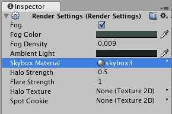

How do I Make a Skybox?
A Skybox is a 6-sided cube that is drawn behind all graphics in the game. Here are the steps to create one:
- Make 6 textures that correspond to each of the 6 sides of the skybox and put them into your project's Assets folder.
- For each texture you need to change the wrap mode from Repeat to Clamp. If you don't do this colors on the edges will not match up:

- Create a new Material by choosing from the menu bar.
- Select the shader drop-down in the top of the Inspector, choose .
- Assign the 6 textures to each texture slot in the material. You can do this by dragging each texture from the Project View onto the corresponding slots.

To Assign the skybox to the scene you're working on:
- Choose from the menu bar.
- Drag the new Skybox Material to the Skybox Material slot in the Inspector.

Note that Standard Assets package contains several ready-to-use skyboxes - this is the quickest way to get started!
Page last updated: 2007-11-16